在光照下，細胞質液、葉綠體基質和類囊體內部的 pH 值大小為何？
(A) 細胞質液 ＞ 葉綠體基質 ＞ 類囊體內部 (B) 細胞質液 ＞ 類囊體內部 ＞ 葉綠體基質 (C) 葉綠體基質 ＞ 細胞質液 ＞ 類囊體內部 (D) 葉綠體基質 ＞ 類囊體內部 ＞ 細胞質液
看答案與詳解收起
答(C)
解
光反應把 H⁺ 從基質唧入類囊體內腔：類囊體內部 H⁺ 最多、pH 最低（最酸）；基質 H⁺ 被抽走 ⇒ pH 最高（較鹼）；細胞質液居中。所以 基質 ＞ 細胞質液 ＞ 類囊體內部。
在光照下，細胞質液、葉綠體基質和類囊體內部的 pH 值大小為何？
(A) 細胞質液 ＞ 葉綠體基質 ＞ 類囊體內部 (B) 細胞質液 ＞ 類囊體內部 ＞ 葉綠體基質 (C) 葉綠體基質 ＞ 細胞質液 ＞ 類囊體內部 (D) 葉綠體基質 ＞ 類囊體內部 ＞ 細胞質液
光反應把 H⁺ 從基質唧入類囊體內腔：類囊體內部 H⁺ 最多、pH 最低（最酸）；基質 H⁺ 被抽走 ⇒ pH 最高（較鹼）；細胞質液居中。所以 基質 ＞ 細胞質液 ＞ 類囊體內部。
下列關於「光合色素的色層分析」實驗的敘述，何者正確？
(A) 各光合色素的 Rf 值在不同的展開液不變 (B) 色素展開後，在濾紙上的分布可能超出展開液到達的位置 (C) 光合色素的移動速率與濾紙間的親合力及溶解度有關 (D) 實驗是以石油醚萃取光合色素
日前有科學家想製作塑膠森林，目的是吸收大氣中的二氧化碳，減緩全球暖化。請問他應該於植物細胞的何處取得相關酵素？
(A) 葉綠體的內膜 (B) 葉綠體的類囊體 (C) 葉綠體的基質 (D) 粒線體的內膜 (E) 粒線體的基質
固定 CO₂ 的酵素（Rubisco，核酮糖羧化酶）在葉綠體基質（卡爾文循環的場所）。
右圖為真核細胞內某胞器構造示意圖，甲～丁代號依序為此胞器由外到內的相關構造（甲＝外膜、乙＝膜間腔、丙＝內膜、丁＝基質），有關此胞器構造與功能的敘述，下列何者正確？
(A) 甲、丙為膜狀構造，與內質網、高基氏體等膜狀構造的演化起源相同 (B) 乙構造為 ATP 合成時，高濃度 H⁺ 的暫存空間 (C) 卡爾文循環在丁處進行，產生的醣類可以轉換為蔗糖或澱粉 (D) 此構造源自於被吞噬入細胞內的藍綠菌，與細胞經長時間交互作用形成
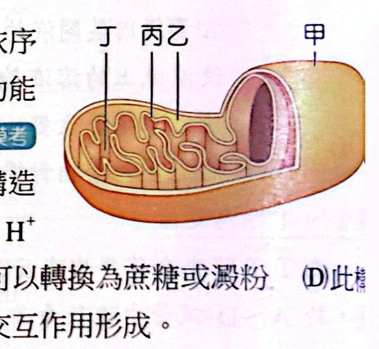
這是粒線體。
- (A) ✗ 粒線體的膜源自被吞噬的好氧細菌，不屬於內膜系統（內質網、高基氏體）。
- (B) ○ 電子傳遞時 H⁺ 被泵入膜間腔暫存，再經 ATP 合成酶回基質。
- (C) ✗ 卡爾文循環在葉綠體基質，不是粒線體。
- (D) ✗ 粒線體源自好氧細菌；葉綠體才源自藍綠菌。
下圖為 ATP 分解釋能的示意圖（ATP ＋ H₂O → ADP ＋ 無機磷酸鹽 ＋ 能量），有關 ATP 構造與反應進行的敘述，下列何者正確？
(A) 光合作用的 ATP 係於基質中合成 (B) 此反應的逆反應僅發生於粒線體與葉綠體中 (C) 一個葡萄糖分子經有氧呼吸作用後，可將全部的能量轉換儲存於 ATP 分子中 (D) 此反應可發生於所有的動、植物細胞內
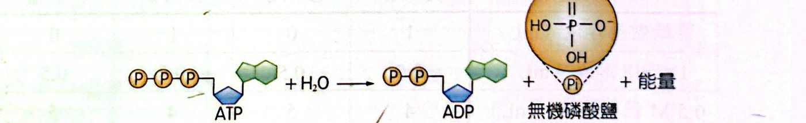
講義解答為 (A)。
- (A) ○ 光反應時，ATP 由類囊體膜上的 ATP 合成酶合成，並釋放到葉綠體基質中，供卡爾文循環（固碳反應）使用，所以說「ATP 於基質中合成」是這題的標準說法。
- (B) ✗ ADP＋Pi → ATP（逆反應）在細胞質液（糖解）也進行，不只粒線體與葉綠體。
- (C) ✗ 葡萄糖氧化釋出的能量只有約 40% 轉成 ATP，其餘是熱能。
- (D) 講義不選（這題的原始試題以 A 為標準答案）；ATP 水解供能雖然是活細胞的共通機制，但以講義解答為準。
下列有關植物光合作用的敘述，何者正確？
(A) 水分子在光系統 I 被裂解產生 H⁺、e⁻ 及 O₂ (B) 大部分的葉綠素直接參與光反應中電子的傳遞 (C) 最終產物葡萄糖在葉綠餅中產生 (D) 植物利用紅光、藍光及綠光的效率並不相同
欲探究光照對植物光合色素與光合作用的影響，某生挑選甲、乙兩種植物品種進行實驗，分別以正常光與弱光照射處理後，分析植物體內不同光合色素的含量並測定其光合作用速率如下表（圖）：
根據表中數據，下列何者為合理的推論？
(A) 正常光照下的光合色素含量會較弱光下為高 (B) 光合色素含量高時，其光合作用速率便較高 (C) 品種乙較品種甲適合生存於光線不足的環境下 (D) 若給予強光，兩品種的光合作用速率都會更高
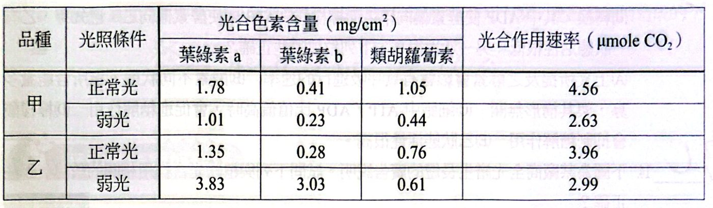
關於實驗中甲、乙兩品種的植物色素，下列敘述何者正確？
(A) 實驗中所測得的光合色素多存在於植物細胞的葉綠體或液泡中 (B) 弱光下的乙品種，其葉綠素含量較其他品種或條件下的葉綠素含量高 (C) 類胡蘿蔔素皆為協助吸光的天線色素，葉綠素僅為反應中心的吸光色素 (D) 葉綠素 a 位於光系統 II 反應中心，葉綠素 b 則位於光系統 I 的反應中心
下列有關光反應與固碳反應的比較，哪些正確？（多選）
| 選項 | 光反應 | 固碳反應 |
|---|---|---|---|
| (A) 能量轉換 | 光能 → 化學能 | 化學能 → 化學能 |
| (B) 進行場所 | 類囊體 | 葉綠體基質 |
| (C) 進行時間 | 光照下才能進行 | 黑暗中才能進行 |
| (D) 反應物 | 水、ADP、NADP⁺ | CO₂、ATP、NADPH |
| (E) 生成物 | H₂、ATP、NADPH | O₂、醣、ADP、NADP⁺ |
下列有關克氏循環（檸檬酸循環）與卡氏循環（卡爾文循環）的比較，哪些正確？（多選）
| 選項 | (A) 反應場所 | (B) 與 O₂ 關係 | (C) 與輔酶關係 | (D) 產物 | (E) 進行時間 |
|---|---|---|---|---|---|
| 克氏循環 | 粒線體基質 | O₂ 為反應物 | 產生 NADH | CO₂ | 日夜皆可進行 |
| 卡氏循環 | 葉綠體基質 | O₂ 為產物 | 產生 NADPH | 三碳醣 | 僅夜間進行 |
下列有關 C₃、C₄ 和 CAM 植物的敘述，哪些正確？（多選）
(A) C₄ 植物的固碳作用是以空間來與卡爾文循環隔離，CAM 植物則是以時間來隔離 (B) C₃ 植物是利用三碳化合物進行 CO₂ 的固定 (C) C₄ 植物的維管束鞘細胞具有葉綠體 (D) C₄ 及 CAM 植物皆需經過兩次 CO₂ 的固定作用 (E) 三者皆可在夜間進行固碳反應
下列哪些步驟需要還原性輔酶的參與才能進行？
(A) 光合作用固碳反應中的再生五碳醣 (B) 光合作用固碳反應中的固碳階段 (C) 丙酮酸變為乙醇 (D) 丙酮酸變為乳酸 (E) 克氏循環
在糖解作用中，有一種酵素會受檸檬酸、ATP、ADP 等物質影響，而在甲、乙兩狀態間轉換，其中 ADP 使酵素偏向甲，而檸檬酸、ATP 則使酵素偏向乙。已知甲、乙有一狀態活性很低，另一活性很高，下列敘述哪些正確？
(A) 上文所提及之酵素會影響有氧呼吸進行的速率 (B) 酵素不同狀態，指所含能量多寡，與其構形無關 (C) 細胞中 ATP／ADP 比值偏高時，會促進糖解作用 (D) 檸檬酸會抑制糖解作用 (E) 乙狀態活性很高
下圖為某廠商全光譜生長燈的廣告說明（320～400 nm：對需著色植物可增色，但對生長無直接幫助；400～510 nm：藍光，光合作用中對葉綠素的吸收轉換使用及根莖生長；510～610 nm：綠光，植物生長時，無法轉換的光譜；610～720 nm：紅光，光合作用吸收最強效果的範圍；720～800 nm：對植物直接生長無幫助）。試問下列與植物光合作用相關的敘述，哪些正確？
(A) 葉綠素、葉黃素及花青素都屬於光合色素 (B) 在特定光強度範圍內，光強度愈強，光合作用的效率也愈佳 (C) 生物視覺的綠光對光合作用的進行沒有幫助 (D) 為提升光合作用的進行，文中的全光譜生長燈為紅光與藍光的混合，故應呈現紫色光源 (E) 當植物生長燈與植物的距離增加為原來的 10 倍，則植物感受到光的照度為原來的 1/10 倍
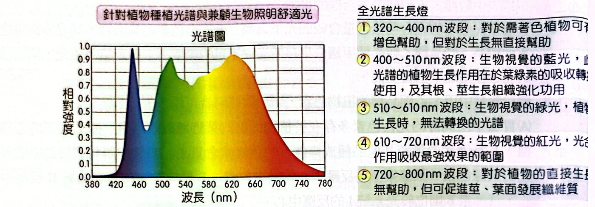
圖㈠為試管中不同培養階段之酵母菌族群數量、葡萄糖濃度和酒精濃度的變化曲線，圖㈡為酵母菌的呼吸作用。(1) 酵母菌在哪些階段族群成長為正成長？(2) ①～③ 各是什麼名稱？(3) 酵母菌在哪個時間點開始進行發酵？(4) T₁～T₂ 階段葡萄糖濃度劇烈減少，若與呼吸作用有關，應該如何造成？

詳解見經典演練 5：族群數量上升＝正成長；酒精自 T₁ 起上升，代表 T₁ 開始發酵；發酵的能量效率低，所以葡萄糖消耗得快。
下列有關不同植物固定 CO₂ 方法的敘述，何者錯誤？
(A) 水稻葉肉細胞內的酵素能促使 CO₂ 與三碳醣結合 (B) 鳳梨的葉肉細胞可在夜間將 CO₂ 固定於液泡內 (C) 甘蔗的葉肉細胞僅能固定 CO₂，但無法合成磷酸甘油醛 (D) 仙人掌的葉肉細胞可以固定 CO₂，又可以合成磷酸甘油醛
下列哪一物質的合成產物是植株乾重的主要來源？
(A) Ca (B) H₂O (C) CO₂ (D) 由土壤中吸收的有機物
植物乾重的主要成分是有機物，其碳來自光合作用固定的 CO₂（水主要是濕重）；土壤礦物（Ca 等）量很少，植物是自營生物，不從土壤吸收有機物。
某一株植物在逆境下產氧量下降時，最可能是細胞中的哪一部位受損？
(A) 粒線體內膜 (B) 粒線體外膜 (C) 粒線體基質 (D) 類囊體（葉綠囊） (E) 葉綠體基質
O₂ 來自光反應的水裂解，發生在類囊體膜（PS II）；粒線體、基質都不產 O₂。
粒線體與葉綠體都是細胞處理能量的胞器，但兩者的分工不同，下列何者正確？
(A) 各自都具有 DNA，以製造本身所需蛋白 (B) 葡萄糖分解在粒線體內進行 (C) 粒線體可產生 ATP 而葉綠體則否 (D) 葉綠體為植物獨有，粒線體為動物獨有 (E) ATP 的產生都發生在內膜上
光自營生物藉由光合作用獲得能量和養分，以維持生活。下列有關光反應之敘述，何者正確？
(A) 光分解而釋放出的電子用來合成葡萄糖 (B) 光系統 II（PS II）釋出的電子會傳至水分子 (C) 藉由 RuBP 和 CO₂ 使光反應和碳反應相連結 (D) 參與 NADPH 合成電子，最終來源為水分子
某生依課本指示探討光反應的還原實驗，利用 DCPIP 的顏色變化測定葉綠體釋出的質子與電子。他配製適當濃度的葉綠體懸浮液後，卻誤加入 5% DCPIP 取代正常的 0.01～0.1%，導致 DCPIP 過量。經照光 30 分鐘後，離心，取上清液，觀察顏色變化，下列情形何者最有可能？
(A) 維持藍色 (B) 維持無色 (C) 由藍色變無色 (D) 由無色變藍色
葉綠體釋出的電子數量有限；DCPIP 濃度提高 50 倍以上，絕大部分 DCPIP 仍是氧化態（藍色），所以離心後上清液仍呈藍色。
某生觀察一植物時，發現它的氣孔於夜間張開。下列何者是此現象的合理推測？
(A) 此植物栽培於高溫環境 (B) 此植物栽培於高溼度環境 (C) 此植物為 CAM 植物 (D) 此植物為 C₃ 植物
CAM 植物白天氣孔關閉（減少水分散失）、夜間開啟吸收 CO₂ 儲存為蘋果酸。C₃、C₄ 氣孔都是白天開。
若想試驗逆境是否造成豆苗的光合作用機制受損，應該可以進行下列哪一實驗？
(A) 以濾紙色層分析法檢視逆境下的豆苗，是否含有葉綠素 a (B) 以濾紙色層分析法比較正常生長與逆境生長的豆苗，逆境組的葉綠素 a 之 Rf 值是否變小 (C) 分離逆境生長豆苗的葉綠體，加入 DCPIP 一段時間後，上清液是否變無色 (D) 比較正常生長與逆境生長豆苗的葉綠體粗萃取液加入 DCPIP 一段時間後，逆境組上清液顏色是否較深
要檢驗光反應（釋出電子）是否受損，需用希爾反應（DCPIP），而且要有正常組當對照比較褪色程度；逆境組若光反應受損，DCPIP 被還原得少，顏色會較深。
- (A)(B) 層析只看色素種類／Rf，與光反應能力無直接關係；Rf 由色素性質決定，不會因逆境改變。
- (C) 沒有正常組對照，只看「是否變無色」無法判斷是否受損。
螺旋藻為一種藍綠菌，而小球藻則為一種綠藻，螺旋藻及小球藻皆被認為富含人體所需的養分。下列有關這兩者的敘述何者正確？
(A) 兩者皆具葉綠體 (B) 兩者皆行光合作用光反應產生氧 (C) 兩者的細胞壁主要皆由肽聚糖組成 (D) 在三域系統中螺旋藻是細菌，而小球藻是植物 (E) 螺旋藻以葉黃素，而小球藻則以葉綠素為主要光合色素
右圖為植物光合作用的示意圖（P680 的電子經過「甲」傳到 P700，P700 的電子再經「乙」傳出；水裂解提供電子給 P680），下列敘述何者正確？
(A) 甲的化學反應式為 NADP⁺ ＋ e⁻ → NADPH (B) 乙的化學反應式為 ADP ＋ Pi → ATP (C) 在水蘊草的裂解水作用中，光反應的指標為氧氣 (D) 圖中所示包含光合作用的光反應和固碳反應
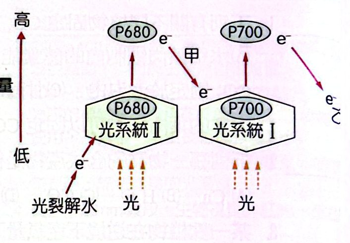
自然界中，氧化還原反應扮演著重要的角色，下列有關碳循環的過程，何者沒有牽涉到氧化還原反應？
(A) 細胞呼吸是利用葡萄糖反應產生二氧化碳，並釋出能量 (B) 生物體內的碳水化合物逐漸在地層中沉積，最後轉變成煤 (C) 煤和石油在空氣中燃燒產生二氧化碳 (D) 二氧化碳溶於水，與鈣離子（Ca²⁺）結合，以碳酸鈣沉澱的方式積存於海底 (E) 二氧化碳經由光合作用轉變為葡萄糖，並釋放出氧氣
(A)(C) 氧化（燃燒、呼吸）；(B) 碳水化合物長期轉變為煤（還原、碳化）；(E) 光合作用是還原 CO₂ 為葡萄糖。(D) CO₂ ＋ H₂O ＋ Ca²⁺ → CaCO₃ ＋ 2H⁺：碳仍是 ＋4 價，沒有電子轉移，只是沉澱反應。
巴拉刈是一種常用來作為除草劑的強氧化劑，可抑制光反應電子傳遞的過程。對人來說，巴拉刈也是劇毒，如果進入細胞會產生大量的過氧化物。下列敘述何者正確？
(A) 植物在噴灑巴拉刈後仍可持續進行碳反應 (B) 巴拉刈分解後產生氧使細胞加速受損 (C) 巴拉刈以吸收電子方式干擾電子傳遞過程 (D) 巴拉刈在葉綠體的作用位置主要在基質 (E) 巴拉刈對植物與動物造成毒害的主要胞器完全相同
許多食品經由微生物發酵而成，下列敘述何者正確？
(A) 優酪乳是由乳酸菌行有氧呼吸，發酵碳水化合物產生乳酸而成 (B) 啤酒是由啤酒細菌分解穀物產生酒精而成 (C) 食用醋是醋酸菌發酵酒精產生醋酸而成 (D) 豆類不含碳水化合物，無法利用微生物發酵成食品
有關真核生物的光合作用和呼吸作用，下列哪些正確？（多選）
(A) 光合作用在葉綠體中進行 (B) 發酵作用在粒線體中進行 (C) 光合作用的過程中會產生 ATP (D) 有氧呼吸產生 ATP 的過程在細胞質中進行 (E) 有些植物細胞內可同時進行光合作用和有氧呼吸
下列哪些是真核細胞的有氧呼吸與發酵作用之共同特徵？（多選）
(A) 皆產生 ATP (B) 皆有糖解的過程 (C) 皆有將丙酮酸還原成乳酸的過程 (D) 皆發生在粒線體中 (E) 全都會產生酒精
兩者都經過糖解作用（細胞質液）並產生 ATP；(C)(E) 只是某些發酵；(D) 發酵不在粒線體。
利用濾紙色層分析法探討各光合色素在展開液（石油醚：丙酮＝9：1）中沿濾紙條往上移動的情形。若定義 Rf＝色素移動的距離／展開液移動的距離，則下列敘述哪些正確？（多選）
(A) 葉綠素 a 的 Rf 等於葉綠素 b 的 Rf (B) 葉綠素 b 的 Rf 大於胡蘿蔔素的 Rf (C) 胡蘿蔔素的 Rf 大於葉綠素 a 的 Rf (D) 色素 Rf 愈大層析後色素帶離原點愈近 (E) 色素的 Rf 愈小，該色素在濾紙上的移動速度愈慢
Rf：胡蘿蔔素 ＞ 葉黃素 ＞ 葉綠素 a ＞ 葉綠素 b。(A)(B) ✗；(C) ○；(D) ✗ Rf 愈大離原點愈遠；(E) ○。
某生利用 0.5 M 蔗糖溶液萃取地瓜葉中的葉綠體進行 DCPIP 反應，實驗設計如下表所示：A：蔗糖 3 mL、萃取液 1 mL、光照 0 小時、DCPIP 0.5 mL；B：蔗糖 3 mL、萃取液 0、光照 0 小時、DCPIP 0.5 mL；C：蔗糖 3 mL、萃取液 1 mL、光照 1 小時、DCPIP 0.5 mL；D：蔗糖 3 mL、萃取液 0、光照 1 小時、DCPIP 0.5 mL。則下列敘述哪些正確？（多選）
(A) 加入蔗糖的目的為脹破細胞，以增加葉綠體的萃取量 (B) C 管在初始反應時的 pH 值最高 (C) B 及 D 管皆會呈現藍色 (D) 此設計可得知葉綠體固碳反應的效率 (E) 當 A、C 管加入強氧化劑時，兩管的呈色會相似
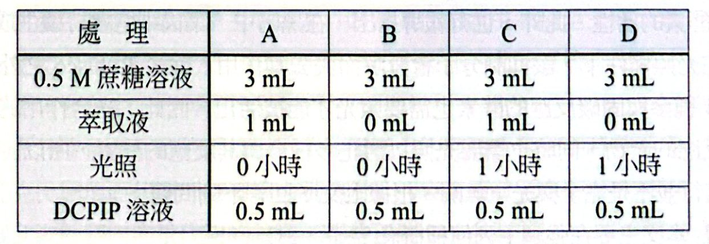
下列有關碳反應的敘述，哪些正確？（多選）
(A) 四碳植物將二氧化碳先固定於維管束鞘細胞內 (B) 水稻與鳳梨在臺灣長得好和產量高，主要是因演化出有效的相同固碳方式 (C) 鳳梨在白天將二氧化碳固定於液泡內以避免散失 (D) 景天科植物與四碳植物的固碳時間不同 (E) 水稻與玉米的固碳方式不同
打破菠菜細胞，以不同溶液萃取並收集濾液進行實驗，下列敘述哪些正確？（多選）
(A) 以 0.5 M 蔗糖液收集的濾液，可在照光下進行希爾反應 (B) 以清水收集的濾液，可以進行過氧化氫酶反應 (C) 過氧化氫酶最佳作用的 pH 值為 10 (D) 在光合色素分離實驗中，展開液與色素的移動距離分別為 5 公分及 2 公分，則該色素 Rf＝2.5 (E) 以石油醚：90% 丙酮約為 9：1 的展開液進行層析實驗，在濾紙上展開速度由慢到快分別為葉綠素 a、葉黃素及胡蘿蔔素
人類癌細胞和正常細胞一樣會進行有氧呼吸，然而癌細胞需要更多能量，因而在有氧情況下，會使用大量葡萄糖進行發酵作用，稱之為有氧糖解。下列敘述哪些正確？（多選）
(A) 癌細胞的有氧糖解不會產生丙酮酸 (B) 有大量癌細胞進行有氧糖解的組織區域內可偵測到高量乳酸 (C) 癌細胞中需要的能量和正常細胞一樣 (D) 癌細胞有氧糖解的過程不需粒線體 (E) 癌細胞有氧呼吸在粒線體中完成
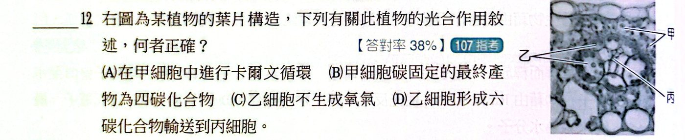
講義解答為 (B)：圖為 C₄ 植物葉片橫切，甲為葉肉細胞，CO₂ 在葉肉細胞由 PEP 羧化酶先固定成四碳化合物（草醯乙酸）；卡爾文循環在維管束鞘細胞進行，所以 (A)（說在甲進行卡爾文循環）不對。
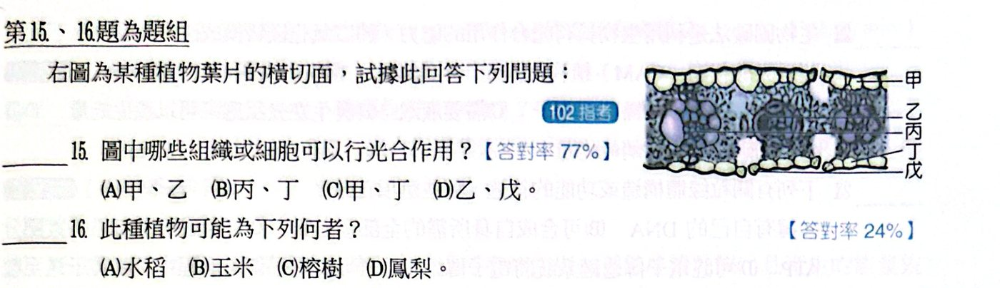
講義解答：15 題 (D)（乙、戊細胞可進行光合作用）；16 題 (B) 玉米（C₄ 植物的維管束鞘有明顯的細胞環，可由葉片橫切構造判斷）。
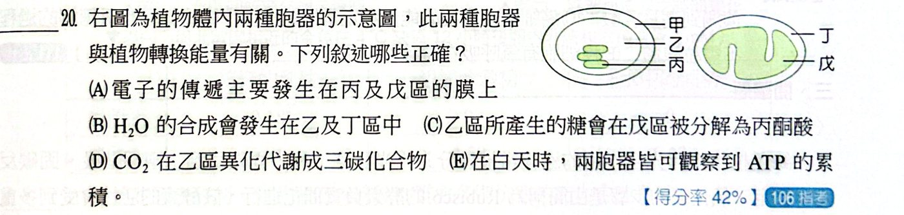
講義解答為 (A)(E)：電子傳遞鏈在類囊體膜（葉綠體）與粒線體內膜進行（A ○）；白天兩種胞器都在合成 ATP（E ○）。(B) H₂O 的合成只在粒線體；(C) 糖解在細胞質液；(D) CO₂ 的固定是同化代謝，不是「異化」。
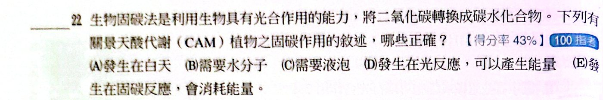
講義解答為 (C)(E)：CAM 植物的 CO₂ 先在夜間固定成四碳酸，儲存於液泡（C ○）；固碳反應（卡爾文循環）要消耗 ATP 與 NADPH（E ○）。(A) 固定發生在夜間；(D) 固碳反應不是光反應。
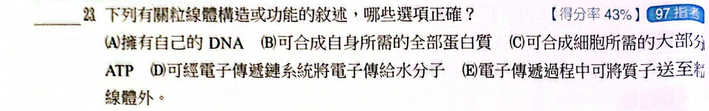
講義解答為 (A)(C)：粒線體有自己的 DNA（A ○），並合成細胞所需的大部分 ATP（C ○）。(B) 不能合成自身所需的全部蛋白質（半自主）；(D) 電子最後傳給 O₂（不是水分子）；(E) 質子是送到膜間腔。
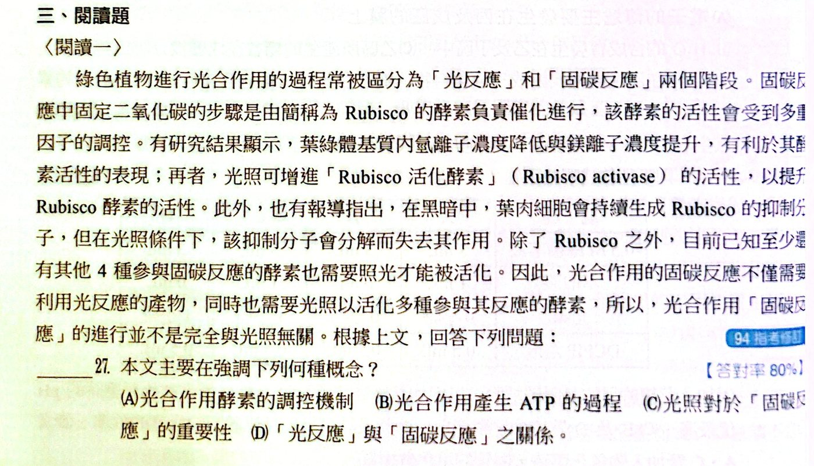
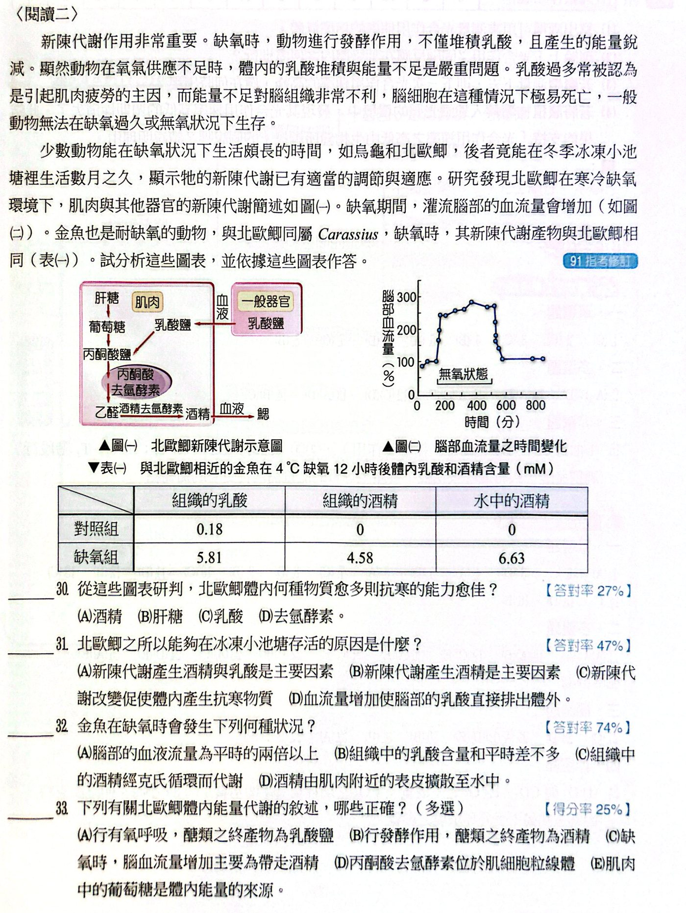
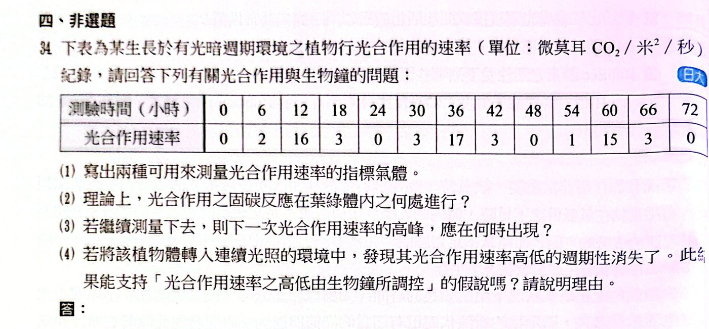